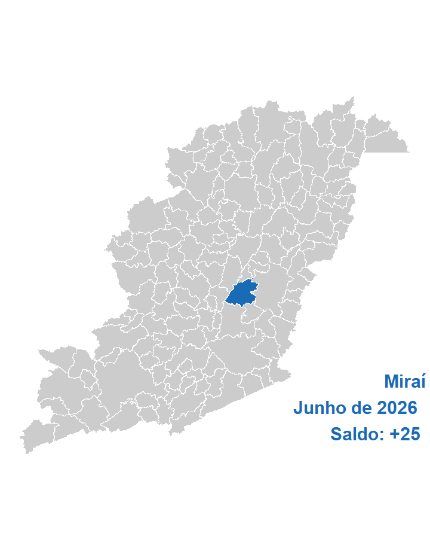
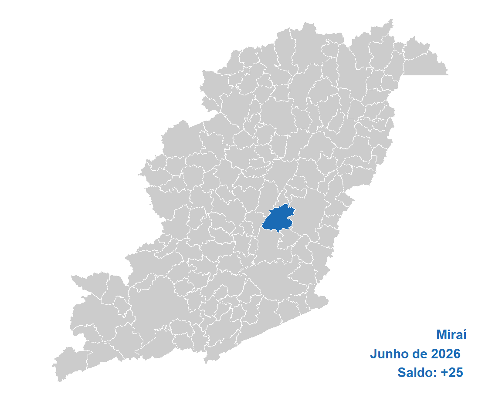

| Ano | Brasil | Estado | Mesorregião | Microrregião | Município |
|---|---|---|---|---|---|
| 2026 | 145.161 | 20.805 | 1.094 | 22 | 25 |
| 2025 | 166.621 | 24.228 | 1.136 | 192 | 30 |
| 2024 | 201.705 | 28.354 | 2.394 | 248 | 30 |
| 2023 | 157.198 | 25.537 | 862 | 275 | 8 |
| 2022 | 277.944 | 33.372 | 1.927 | 89 | 0 |
| 2021 | 310.036 | 39.234 | 2.575 | 353 | 0 |
| 2020 | -23.111 | 5.171 | -38 | 2 | -14 |
| 2019 | 48.436 | 11.603 | 486 | 15 | 19 |
| 2018 | -661 | 12.143 | 512 | 19 | -19 |
| 2017 | 9.821 | 15.445 | 780 | 2 | 4 |
| 2016 | -91.032 | 4.567 | -169 | -66 | -19 |
| 2015 | -111.199 | 9.746 | 654 | 44 | 20 |
| 2014 | 25.363 | 15.717 | 978 | 75 | 2 |
| 2013 | 123.836 | 28.064 | 2.051 | 193 | 23 |
| 2012 | 115.480 | 38.484 | 2.422 | 182 | -19 |
| 2011 | 215.393 | 45.021 | 2.529 | 142 | 3 |
| 2010 | 212.952 | 38.870 | 1.992 | 243 | 1 |
| 2009 | 119.496 | 45.596 | 2.059 | 317 | 6 |
| 2008 | 309.442 | 73.660 | 5.352 | 458 | 48 |
| 2007 | 181.667 | 46.080 | 2.385 | 158 | -6 |
| Ano | Mes | Brasil | Estado | Mesorregião | Microrregião | Município |
|---|---|---|---|---|---|---|
| 2026 | Junho | 145.161 | 20.805 | 1.094 | 22 | 25 |
| 2026 | Maio | 72.960 | 8.922 | 78 | -3 | -1 |
| 2026 | Abril | 85.888 | 8.991 | 673 | 58 | 40 |
| 2026 | Março | 228.208 | 38.845 | 1.753 | 168 | 24 |
| 2026 | Fevereiro | 255.321 | 22.874 | 122 | -44 | 5 |
| 2026 | Janeiro | 112.334 | 7.425 | 175 | 97 | 8 |
| 2025 | Dezembro | -618.164 | -72.755 | -5.949 | -472 | -40 |
| 2025 | Novembro | 85.864 | -8.740 | 833 | 166 | -21 |
| 2025 | Outubro | 85.147 | -4.802 | 813 | 205 | 26 |
| 2025 | Setembro | 213.002 | 11.785 | 969 | 409 | 5 |
| 2025 | Agosto | 147.358 | 1.214 | 1.795 | 229 | 17 |
| 2025 | Julho | 129.775 | 3.497 | 102 | 207 | 7 |
| Acumulado | 942.854 | 38.061 | 2.458 | 1.042 | 95 |
| CBO | Brasil | Estado | Mesorregião | Microrregião | Município |
|---|---|---|---|---|---|
| Forças armadas | 17 | 4 | 4 | NA | NA |
| Poder público | -11.247 | -1.219 | -68 | -3 | 1 |
| Ciências e artes | -2.393 | -179 | 33 | 26 | 3 |
| Técnicos de nível médio | 10.551 | 610 | 173 | 25 | -1 |
| Serviços administrativo | 42.853 | 2.567 | 101 | 34 | 2 |
| Serviços e comércio | 47.993 | 3.561 | 261 | -113 | 2 |
| Agropecuária | 20.571 | 9.903 | 148 | 16 | 3 |
| Bens e serviços industriais 1 | 39.117 | 6.028 | 426 | 34 | 11 |
| Bens e serviços industriais 2 | -1.568 | -410 | 2 | 6 | 5 |
| Reparação e manutenção | -733 | -60 | 14 | -3 | -1 |
| CNAE | Brasil | Estado | Mesorregião | Microrregião | Município |
|---|---|---|---|---|---|
| Agropecuária/florestal | 22.898 | 10.987 | 156 | 15 | 1 |
| Extrativismo | 182 | -184 | 30 | 8 | 1 |
| Indústria de transformação | 12.592 | 2.047 | 22 | 22 | 14 |
| Eletricidade e gás | 359 | 54 | 4 | -1 | NA |
| Água e esgoto | 1.305 | -81 | -41 | -6 | NA |
| Construção | 14.136 | 2.478 | 162 | -13 | -1 |
| Comércio de automotores | 19.177 | 1.332 | 272 | 39 | 3 |
| Transporte e correios | 16.217 | 566 | 4 | 19 | 2 |
| Alojamento e alimentação | 6.590 | 354 | -28 | -5 | -1 |
| Comunicação | 1.038 | 30 | 366 | 17 | NA |
| Atividades financeiras | 761 | 96 | 12 | 3 | NA |
| Imobiliárias | 476 | 89 | 13 | -1 | NA |
| Atividades científicas e técnicas | 4.646 | 36 | 76 | -34 | -1 |
| Atividades administrativas | 26.634 | 222 | -134 | 16 | 5 |
| Administração pública | 1.136 | 186 | 27 | 3 | NA |
| Educação | -7.642 | 429 | -67 | -8 | 2 |
| Saúde e serviços sociais | 20.436 | 1.619 | 91 | -82 | 0 |
| Artes, cultura e esportes | 1.049 | 177 | 31 | 9 | NA |
| Serviços | 3.182 | 371 | 99 | 21 | NA |
| Domésticos | 5 | -3 | NA | NA | NA |
| Organismos internacionais | -14 | 1 | NA | NA | NA |
| Não classificado | -2 | -1 | -1 | NA | NA |
| Educ | Brasil | Estado | Mesorregião | Microrregião | Município |
|---|---|---|---|---|---|
| Analfabeto | 1.072 | 175 | -8 | 5 | NA |
| Até o 5º ano incompleto | 5.335 | 1.098 | -18 | -14 | 2 |
| 5º ano completo | 2.637 | 513 | -29 | -6 | 0 |
| 6º ano completo até o 9º ano incompleto | 2.092 | 770 | -14 | 2 | -1 |
| Fundamental completo | 5.929 | 1.692 | 68 | -10 | 1 |
| Médio incompleto | 15.185 | 2.173 | 50 | 4 | -1 |
| Médio completo | 109.255 | 14.583 | 1.157 | 59 | 20 |
| Superior incompleto | 5.259 | 480 | -99 | -8 | 1 |
| Superior completo | -1.603 | -679 | -13 | -10 | 3 |
| Idade | Brasil | Estado | Mesorregião | Microrregião | Município |
|---|---|---|---|---|---|
| 10 a 14 anos | 2.328 | 113 | 3 | NA | NA |
| 15 a 17 anos | 22.505 | 2.734 | 158 | 32 | -1 |
| 18 a 24 anos | 100.597 | 10.913 | 744 | 82 | 16 |
| 25 a 29 anos | 13.007 | 1.919 | -72 | -21 | 4 |
| 30 a 39 anos | 8.209 | 2.008 | 190 | -24 | -2 |
| 40 a 49 anos | 11.104 | 2.753 | 134 | -23 | 5 |
| 50 a 64 anos | -4.678 | 779 | -17 | -21 | 3 |
| 65 anos ou mais | -6.580 | -294 | -37 | -3 | NA |
| NA | -1.331 | -120 | -9 | NA | NA |
| Raça | Brasil | Estado | Mesorregião | Microrregião | Município |
|---|---|---|---|---|---|
| Indígena | 28.636 | 4.493 | 79 | 9 | 11 |
| Branca | 20.199 | 2.773 | 298 | 1 | 1 |
| 3 | 106.176 | 14.677 | 819 | 23 | 14 |
| Preta | -66 | -84 | -7 | -1 | -1 |
| 5 | 779 | 148 | -9 | -2 | NA |
| Amarela | -9.846 | -1.140 | -82 | -8 | NA |
| 9 | -717 | -62 | -4 | NA | NA |
| Gênero | Brasil | Estado | Mesorregião | Microrregião | Município |
|---|---|---|---|---|---|
| Homens | 72.569 | 11.468 | 309 | -71 | 10 |
| Mulheres | 72.592 | 9.337 | 785 | 93 | 15 |
| Grande_setor | Brasil | Estado | Mesorregião | Microrregião | Município |
|---|---|---|---|---|---|
| Indústria | 14.438 | 1.836 | 15 | 23 | 15 |
| Construção civil | 14.136 | 2.478 | 162 | -13 | -1 |
| Comércio | 19.177 | 1.332 | 272 | 39 | 3 |
| Serviços | 74.514 | 4.173 | 490 | -42 | 7 |
| Agropecuária, extrativismo vegetal,caça e pesca | 22.898 | 10.987 | 156 | 15 | 1 |
| Não classificado | -2 | -1 | -1 | NA | NA |
| Setores | Brasil | Estado | Mesorregião | Microrregião | Município |
|---|---|---|---|---|---|
| Extrativismo mineral | 182 | -184 | 30 | 8 | 1 |
| Indústria de transformação | 12.592 | 2.047 | 22 | 22 | 14 |
| Serviços industriais de utilidade pública | 1.664 | -27 | -37 | -7 | NA |
| Construção civil | 14.136 | 2.478 | 162 | -13 | -1 |
| Comércio | 19.177 | 1.332 | 272 | 39 | 3 |
| Serviços | 73.392 | 3.986 | 463 | -45 | 7 |
| Adiminstração pública | 1.120 | 186 | 26 | 3 | NA |
| Agropecuária, extrativismo vegetal, caça e pesca | 22.898 | 10.987 | 156 | 15 | 1 |
| Ano | Brasil | Estado | Mesorregião | Microrregião | Município |
|---|---|---|---|---|---|
| 2002 | 28.683.913 | 3.046.362 | 285.345 | 28.070 | 1.438 |
| 2003 | 29.544.927 | 3.138.026 | 288.853 | 28.772 | 1.592 |
| 2004 | 31.407.576 | 3.332.775 | 298.898 | 29.750 | 1.480 |
| 2005 | 33.238.617 | 3.592.560 | 322.026 | 32.542 | 1.556 |
| 2006 | 32.903.959 | 3.744.043 | 337.470 | 34.652 | 1.623 |
| 2007 | 37.607.430 | 4.036.203 | 354.945 | 38.192 | 2.343 |
| 2008 | 39.441.566 | 4.184.183 | 369.202 | 39.341 | 2.117 |
| 2009 | 41.207.546 | 4.350.839 | 388.196 | 42.032 | 1.874 |
| 2010 | 44.068.355 | 4.646.891 | 408.037 | 44.049 | 1.873 |
| 2011 | 46.310.631 | 4.850.976 | 429.166 | 44.501 | 1.999 |
| 2012 | 47.458.712 | 4.928.225 | 439.074 | 44.999 | 1.920 |
| 2013 | 48.948.433 | 5.057.080 | 454.446 | 47.030 | 2.223 |
| 2014 | 49.571.510 | 5.071.906 | 456.058 | 47.869 | 2.285 |
| 2015 | 48.060.807 | 4.821.116 | 445.516 | 47.377 | 2.407 |
| 2016 | 46.060.198 | 4.628.701 | 426.384 | 44.154 | 2.246 |
| 2017 | 46.281.590 | 4.710.919 | 435.944 | 46.105 | 2.354 |
| 2018 | 46.631.115 | 4.760.830 | 436.333 | 45.291 | 2.284 |
| 2019 | 46.748.356 | 4.856.025 | 435.241 | 45.739 | 2.420 |
| 2020 | 46.236.176 | 4.814.874 | 423.457 | 43.001 | 2.027 |
| 2021 | 48.728.871 | 5.148.435 | 448.511 | 47.827 | 2.615 |
| 2022 | 52.788.939 | 5.523.279 | 476.377 | 51.121 | 2.667 |
| 2023 | 54.705.614 | 5.633.160 | 497.668 | 52.654 | 2.800 |
| 2024 | 57.789.526 | 6.094.585 | 511.827 | 53.119 | 2.760 |
| 2025 | 60.688.704 | 6.325.291 | 538.504 | 57.113 | 3.023 |
| NA | 0 | 0 | 0 | 0 | NA |
| Ano | Brasil | Estado | Mesorregião | Microrregião |
|---|---|---|---|---|
| 2002 | 0,0050 | 0,0472 | 0,5040 | 5,1229 |
| 2003 | 0,0054 | 0,0507 | 0,5511 | 5,5332 |
| 2004 | 0,0047 | 0,0444 | 0,4952 | 4,9748 |
| 2005 | 0,0047 | 0,0433 | 0,4832 | 4,7815 |
| 2006 | 0,0049 | 0,0433 | 0,4809 | 4,6837 |
| 2007 | 0,0062 | 0,0580 | 0,6601 | 6,1348 |
| 2008 | 0,0054 | 0,0506 | 0,5734 | 5,3812 |
| 2009 | 0,0045 | 0,0431 | 0,4827 | 4,4585 |
| 2010 | 0,0043 | 0,0403 | 0,4590 | 4,2521 |
| 2011 | 0,0043 | 0,0412 | 0,4658 | 4,4920 |
| 2012 | 0,0040 | 0,0390 | 0,4373 | 4,2668 |
| 2013 | 0,0045 | 0,0440 | 0,4892 | 4,7268 |
| 2014 | 0,0046 | 0,0451 | 0,5010 | 4,7734 |
| 2015 | 0,0050 | 0,0499 | 0,5403 | 5,0805 |
| 2016 | 0,0049 | 0,0485 | 0,5268 | 5,0867 |
| 2017 | 0,0051 | 0,0500 | 0,5400 | 5,1057 |
| 2018 | 0,0049 | 0,0480 | 0,5235 | 5,0429 |
| 2019 | 0,0052 | 0,0498 | 0,5560 | 5,2909 |
| 2020 | 0,0044 | 0,0421 | 0,4787 | 4,7138 |
| 2021 | 0,0054 | 0,0508 | 0,5830 | 5,4676 |
| 2022 | 0,0051 | 0,0483 | 0,5599 | 5,2170 |
| 2023 | 0,0051 | 0,0497 | 0,5626 | 5,3177 |
| 2024 | 0,0048 | 0,0453 | 0,5392 | 5,1959 |
| 2025 | 0,0050 | 0,0478 | 0,5614 | 5,2930 |
| NA | NA | NA | NA | NA |
| Ano | Brasil | Estado | Mesorregião | Microrregião | Município |
|---|---|---|---|---|---|
| 2002 | NA | NA | NA | NA | NA |
| 2003 | 3,00 | 3,01 | 1,23 | 2,50 | 10,71 |
| 2004 | 6,30 | 6,21 | 3,48 | 3,40 | -7,04 |
| 2005 | 5,83 | 7,79 | 7,74 | 9,38 | 5,14 |
| 2006 | -1,01 | 4,22 | 4,80 | 6,48 | 4,31 |
| 2007 | 14,29 | 7,80 | 5,18 | 10,22 | 44,36 |
| 2008 | 4,88 | 3,67 | 4,02 | 3,01 | -9,65 |
| 2009 | 4,48 | 3,98 | 5,14 | 6,84 | -11,48 |
| 2010 | 6,94 | 6,80 | 5,11 | 4,80 | -0,05 |
| 2011 | 5,09 | 4,39 | 5,18 | 1,03 | 6,73 |
| 2012 | 2,48 | 1,59 | 2,31 | 1,12 | -3,95 |
| 2013 | 3,14 | 2,61 | 3,50 | 4,51 | 15,78 |
| 2014 | 1,27 | 0,29 | 0,35 | 1,78 | 2,79 |
| 2015 | -3,05 | -4,94 | -2,31 | -1,03 | 5,34 |
| 2016 | -4,16 | -3,99 | -4,29 | -6,80 | -6,69 |
| 2017 | 0,48 | 1,78 | 2,24 | 4,42 | 4,81 |
| 2018 | 0,76 | 1,06 | 0,09 | -1,77 | -2,97 |
| 2019 | 0,25 | 2,00 | -0,25 | 0,99 | 5,95 |
| 2020 | -1,10 | -0,85 | -2,71 | -5,99 | -16,24 |
| 2021 | 5,39 | 6,93 | 5,92 | 11,22 | 29,01 |
| 2022 | 8,33 | 7,28 | 6,21 | 6,89 | 1,99 |
| 2023 | 3,63 | 1,99 | 4,47 | 3,00 | 4,99 |
| 2024 | 5,64 | 8,19 | 2,85 | 0,88 | -1,43 |
| 2025 | 5,02 | 3,79 | 5,21 | 7,52 | 9,53 |
| NA | -100,00 | -100,00 | -100,00 | -100,00 | NA |
| Ano | Brasil | Estado | Mesorregião | Microrregião | Município |
|---|---|---|---|---|---|
| 2002 | 0,00 | 0,00 | 0,00 | 0,00 | 0,00 |
| 2003 | 3,00 | 3,01 | 1,23 | 2,50 | 10,71 |
| 2004 | 9,50 | 9,40 | 4,75 | 5,99 | 2,92 |
| 2005 | 15,88 | 17,93 | 12,85 | 15,93 | 8,21 |
| 2006 | 14,71 | 22,90 | 18,27 | 23,45 | 12,87 |
| 2007 | 31,11 | 32,49 | 24,39 | 36,06 | 62,93 |
| 2008 | 37,50 | 37,35 | 29,39 | 40,15 | 47,22 |
| 2009 | 43,66 | 42,82 | 36,04 | 49,74 | 30,32 |
| 2010 | 53,63 | 52,54 | 43,00 | 56,93 | 30,25 |
| 2011 | 61,45 | 59,24 | 50,40 | 58,54 | 39,01 |
| 2012 | 65,45 | 61,77 | 53,87 | 60,31 | 33,52 |
| 2013 | 70,65 | 66,00 | 59,26 | 67,55 | 54,59 |
| 2014 | 72,82 | 66,49 | 59,83 | 70,53 | 58,90 |
| 2015 | 67,55 | 58,26 | 56,13 | 68,78 | 67,39 |
| 2016 | 60,58 | 51,94 | 49,43 | 57,30 | 56,19 |
| 2017 | 61,35 | 54,64 | 52,78 | 64,25 | 63,70 |
| 2018 | 62,57 | 56,28 | 52,91 | 61,35 | 58,83 |
| 2019 | 62,98 | 59,40 | 52,53 | 62,95 | 68,29 |
| 2020 | 61,19 | 58,05 | 48,40 | 53,19 | 40,96 |
| 2021 | 69,88 | 69,00 | 57,18 | 70,38 | 81,85 |
| 2022 | 84,04 | 81,31 | 66,95 | 82,12 | 85,47 |
| 2023 | 90,72 | 84,91 | 74,41 | 87,58 | 94,71 |
| 2024 | 101,47 | 100,06 | 79,37 | 89,24 | 91,93 |
| 2025 | 111,58 | 107,63 | 88,72 | 103,47 | 110,22 |
| NA | -100,00 | -100,00 | -100,00 | -100,00 | NA |
| Ano | Brasil | Estado | Mesorregião | Microrregião | Município |
|---|---|---|---|---|---|
| 2002 | 885,39 | 699,14 | 526,14 | 409,20 | 348,88 |
| 2003 | 985,30 | 783,42 | 585,15 | 471,25 | 408,25 |
| 2004 | 1.058,63 | 846,89 | 634,30 | 487,08 | 399,83 |
| 2005 | 1.135,85 | 904,05 | 685,47 | 562,30 | 405,16 |
| 2006 | 1.245,61 | 1.006,04 | 744,63 | 628,09 | 566,46 |
| 2007 | 1.301,87 | 1.065,81 | 802,71 | 675,12 | 730,13 |
| 2008 | 1.436,70 | 1.181,73 | 876,96 | 719,01 | 747,41 |
| 2009 | 1.535,74 | 1.273,12 | 963,89 | 788,85 | 795,42 |
| 2010 | 1.675,01 | 1.414,21 | 1.069,58 | 876,88 | 873,74 |
| 2011 | 1.827,45 | 1.560,35 | 1.172,93 | 951,27 | 921,73 |
| 2012 | 1.996,90 | 1.692,70 | 1.292,52 | 1.051,38 | 1.032,11 |
| 2013 | 2.177,60 | 1.861,57 | 1.399,74 | 1.177,13 | 1.226,44 |
| 2014 | 2.352,42 | 2.010,33 | 1.536,23 | 1.282,80 | 1.272,17 |
| 2015 | 2.541,18 | 2.165,84 | 1.645,82 | 1.399,34 | 1.372,56 |
| 2016 | 2.731,61 | 2.342,07 | 1.809,10 | 1.516,69 | 1.475,81 |
| 2017 | 2.850,41 | 2.440,03 | 1.918,43 | 1.593,62 | 1.555,14 |
| 2018 | 2.939,05 | 2.489,11 | 1.983,97 | 1.652,21 | 1.608,77 |
| 2019 | 2.921,13 | 2.495,23 | 1.953,96 | 1.680,60 | 1.676,75 |
| 2020 | 3.003,69 | 2.598,34 | 2.015,89 | 1.689,83 | 1.604,32 |
| 2021 | 3.295,76 | 2.889,99 | 2.268,66 | 1.908,71 | 2.005,53 |
| 2022 | 3.437,29 | 2.916,94 | 2.333,04 | 2.033,17 | 2.122,33 |
| 2023 | 3.383,32 | 3.022,90 | 2.472,81 | 2.309,96 | 2.312,81 |
| 2024 | 3.728,47 | 3.255,82 | 2.658,71 | 2.356,14 | 2.398,70 |
| 2025 | 3.760,69 | 3.221,18 | 2.794,52 | 2.497,20 | 2.559,09 |
| NA | NA | NA | NA | NA | NA |
| Ano | Estado | Mesorregião | Microrregião | Município |
|---|---|---|---|---|
| 2002 | 78,9650 | 59,4250 | 46,2168 | 39,4043 |
| 2003 | 79,5106 | 59,3880 | 47,8285 | 41,4342 |
| 2004 | 79,9994 | 59,9173 | 46,0103 | 37,7692 |
| 2005 | 79,5923 | 60,3491 | 49,5046 | 35,6705 |
| 2006 | 80,7669 | 59,7806 | 50,4244 | 45,4760 |
| 2007 | 81,8673 | 61,6586 | 51,8577 | 56,0832 |
| 2008 | 82,2528 | 61,0401 | 50,0460 | 52,0225 |
| 2009 | 82,8995 | 62,7641 | 51,3664 | 51,7940 |
| 2010 | 84,4297 | 63,8548 | 52,3508 | 52,1632 |
| 2011 | 85,3838 | 64,1840 | 52,0543 | 50,4382 |
| 2012 | 84,7663 | 64,7266 | 52,6508 | 51,6859 |
| 2013 | 85,4872 | 64,2790 | 54,0564 | 56,3208 |
| 2014 | 85,4578 | 65,3041 | 54,5312 | 54,0791 |
| 2015 | 85,2299 | 64,7662 | 55,0667 | 54,0127 |
| 2016 | 85,7394 | 66,2282 | 55,5236 | 54,0271 |
| 2017 | 85,6027 | 67,3036 | 55,9086 | 54,5584 |
| 2018 | 84,6910 | 67,5037 | 56,2159 | 54,7377 |
| 2019 | 85,4200 | 66,8905 | 57,5326 | 57,4007 |
| 2020 | 86,5048 | 67,1137 | 56,2584 | 53,4114 |
| 2021 | 87,6881 | 68,8357 | 57,9143 | 60,8518 |
| 2022 | 84,8615 | 67,8744 | 59,1505 | 61,7441 |
| 2023 | 89,3471 | 73,0881 | 68,2749 | 68,3592 |
| 2024 | 87,3232 | 71,3083 | 63,1932 | 64,3347 |
| 2025 | 85,6538 | 74,3088 | 66,4028 | 68,0484 |
| NA | NA | NA | NA | NA |
| Grandes.Grupos.CBO | Brasil | Estado | Mesorregião | Microrregião | Município |
|---|---|---|---|---|---|
| Membros das Forças Armadas | 0 | 0 | 0 | 0 | 0 |
| (NaN) | (NaN) | (NaN) | (NaN) | (NaN) | |
| Membros superiores do poder público, dirigentes e gerentes | 0 | 0 | 0 | 0 | 0 |
| (NaN) | (NaN) | (NaN) | (NaN) | (NaN) | |
| Profissionais das ciências e das artes | 0 | 0 | 0 | 0 | 0 |
| (NaN) | (NaN) | (NaN) | (NaN) | (NaN) | |
| Técnicos de nível médio | 0 | 0 | 0 | 0 | 0 |
| (NaN) | (NaN) | (NaN) | (NaN) | (NaN) | |
| Trabalhadores de serviços administrativos | 0 | 0 | 0 | 0 | 0 |
| (NaN) | (NaN) | (NaN) | (NaN) | (NaN) | |
| Trabalhadores dos serviços, vendedores do comércio | 0 | 0 | 0 | 0 | 0 |
| (NaN) | (NaN) | (NaN) | (NaN) | (NaN) | |
| Trabalhadores agropecuários, florestais e da pesca | 0 | 0 | 0 | 0 | 0 |
| (NaN) | (NaN) | (NaN) | (NaN) | (NaN) | |
| Trabalhadores da produção de bens e serviços industriais (1) | 0 | 0 | 0 | 0 | 0 |
| (NaN) | (NaN) | (NaN) | (NaN) | (NaN) | |
| Trabalhadores da produção de bens e serviços industriais (2) | 0 | 0 | 0 | 0 | 0 |
| (NaN) | (NaN) | (NaN) | (NaN) | (NaN) | |
| Trabalhadores em serviços de reparação e manutenção | 0 | 0 | 0 | 0 | 0 |
| (NaN) | (NaN) | (NaN) | (NaN) | (NaN) | |
| Não classificados | 0 | 0 | 0 | 0 | 0 |
| (NaN) | (NaN) | (NaN) | (NaN) | (NaN) |
| CNAE | Brasil | Estado | Mesorregião | Microrregião | Município |
|---|---|---|---|---|---|
| Agropecuária/florestal | 0 | 0 | 0 | 0 | 0 |
| (NaN) | (NaN) | (NaN) | (NaN) | (NaN) | |
| Extrativismo | 0 | 0 | 0 | 0 | 0 |
| (NaN) | (NaN) | (NaN) | (NaN) | (NaN) | |
| Indústria de transformação | 0 | 0 | 0 | 0 | 0 |
| (NaN) | (NaN) | (NaN) | (NaN) | (NaN) | |
| Eletricidade e gás | 0 | 0 | 0 | 0 | 0 |
| (NaN) | (NaN) | (NaN) | (NaN) | (NaN) | |
| Água e esgoto | 0 | 0 | 0 | 0 | 0 |
| (NaN) | (NaN) | (NaN) | (NaN) | (NaN) | |
| Construção | 0 | 0 | 0 | 0 | 0 |
| (NaN) | (NaN) | (NaN) | (NaN) | (NaN) | |
| Comércio de automotores | 0 | 0 | 0 | 0 | 0 |
| (NaN) | (NaN) | (NaN) | (NaN) | (NaN) | |
| Transporte e correios | 0 | 0 | 0 | 0 | 0 |
| (NaN) | (NaN) | (NaN) | (NaN) | (NaN) | |
| Alojamento e alimentação | 0 | 0 | 0 | 0 | 0 |
| (NaN) | (NaN) | (NaN) | (NaN) | (NaN) | |
| Comunicação | 0 | 0 | 0 | 0 | 0 |
| (NaN) | (NaN) | (NaN) | (NaN) | (NaN) | |
| Atividades financeiras | 0 | 0 | 0 | 0 | 0 |
| (NaN) | (NaN) | (NaN) | (NaN) | (NaN) | |
| Imobiliárias | 0 | 0 | 0 | 0 | 0 |
| (NaN) | (NaN) | (NaN) | (NaN) | (NaN) | |
| Atividades científicas e técnicas | 0 | 0 | 0 | 0 | 0 |
| (NaN) | (NaN) | (NaN) | (NaN) | (NaN) | |
| Atividades administrativas | 0 | 0 | 0 | 0 | 0 |
| (NaN) | (NaN) | (NaN) | (NaN) | (NaN) | |
| Administração pública | 0 | 0 | 0 | 0 | 0 |
| (NaN) | (NaN) | (NaN) | (NaN) | (NaN) | |
| Educação | 0 | 0 | 0 | 0 | 0 |
| (NaN) | (NaN) | (NaN) | (NaN) | (NaN) | |
| Saúde e serviços sociais | 0 | 0 | 0 | 0 | 0 |
| (NaN) | (NaN) | (NaN) | (NaN) | (NaN) | |
| Artes, cultura e esportes | 0 | 0 | 0 | 0 | 0 |
| (NaN) | (NaN) | (NaN) | (NaN) | (NaN) | |
| Serviços | 0 | 0 | 0 | 0 | 0 |
| (NaN) | (NaN) | (NaN) | (NaN) | (NaN) | |
| Domésticos | 0 | 0 | 0 | 0 | 0 |
| (NaN) | (NaN) | (NaN) | (NaN) | (NaN) | |
| Organismos internacionais | 0 | 0 | 0 | 0 | 0 |
| (NaN) | (NaN) | (NaN) | (NaN) | (NaN) | |
| Não classificados | 0 | 0 | 0 | 0 | 0 |
| (NaN) | (NaN) | (NaN) | (NaN) | (NaN) |
| Escolaridade | Brasil | Estado | Mesorregião | Microrregião | Município |
|---|---|---|---|---|---|
| Analfabeto | 0 | 0 | 0 | 0 | 0 |
| (NaN) | (NaN) | (NaN) | (NaN) | (NaN) | |
| Até o 5º ano incompleto | 0 | 0 | 0 | 0 | 0 |
| (NaN) | (NaN) | (NaN) | (NaN) | (NaN) | |
| 5º ano completo | 0 | 0 | 0 | 0 | 0 |
| (NaN) | (NaN) | (NaN) | (NaN) | (NaN) | |
| 6º ao 9º ano incompleto | 0 | 0 | 0 | 0 | 0 |
| (NaN) | (NaN) | (NaN) | (NaN) | (NaN) | |
| Fundamental completo | 0 | 0 | 0 | 0 | 0 |
| (NaN) | (NaN) | (NaN) | (NaN) | (NaN) | |
| Médio incompleto | 0 | 0 | 0 | 0 | 0 |
| (NaN) | (NaN) | (NaN) | (NaN) | (NaN) | |
| Médio completo | 0 | 0 | 0 | 0 | 0 |
| (NaN) | (NaN) | (NaN) | (NaN) | (NaN) | |
| Superior incompleto | 0 | 0 | 0 | 0 | 0 |
| (NaN) | (NaN) | (NaN) | (NaN) | (NaN) | |
| Superior completo | 0 | 0 | 0 | 0 | 0 |
| (NaN) | (NaN) | (NaN) | (NaN) | (NaN) | |
| Não classificados | 0 | 0 | 0 | 0 | 0 |
| (NaN) | (NaN) | (NaN) | (NaN) | (NaN) |
| Faixas.Etárias | Brasil | Estado | Mesorregião | Microrregião | Município |
|---|---|---|---|---|---|
| 10 a 14 anos | 0 | 0 | 0 | 0 | 0 |
| (NaN) | (NaN) | (NaN) | (NaN) | (NaN) | |
| 15 a 17 anos | 0 | 0 | 0 | 0 | 0 |
| (NaN) | (NaN) | (NaN) | (NaN) | (NaN) | |
| 18 a 24 anos | 0 | 0 | 0 | 0 | 0 |
| (NaN) | (NaN) | (NaN) | (NaN) | (NaN) | |
| 25 a 29 anos | 0 | 0 | 0 | 0 | 0 |
| (NaN) | (NaN) | (NaN) | (NaN) | (NaN) | |
| 30 a 39 anos | 0 | 0 | 0 | 0 | 0 |
| (NaN) | (NaN) | (NaN) | (NaN) | (NaN) | |
| 40 a 49 anos | 0 | 0 | 0 | 0 | 0 |
| (NaN) | (NaN) | (NaN) | (NaN) | (NaN) | |
| 50 a 64 anos | 0 | 0 | 0 | 0 | 0 |
| (NaN) | (NaN) | (NaN) | (NaN) | (NaN) | |
| 65 anos ou mais | 0 | 0 | 0 | 0 | 0 |
| (NaN) | (NaN) | (NaN) | (NaN) | (NaN) | |
| Não classificados | 0 | 0 | 0 | 0 | 0 |
| (NaN) | (NaN) | (NaN) | (NaN) | (NaN) |
| Raça | Brasil | Estado | Mesorregião | Microrregião | Município |
|---|---|---|---|---|---|
| Indígena | 0 | 0 | 0 | 0 | 0 |
| (NaN) | (NaN) | (NaN) | (NaN) | (NaN) | |
| Branco | 0 | 0 | 0 | 0 | 0 |
| (NaN) | (NaN) | (NaN) | (NaN) | (NaN) | |
| Preto | 0 | 0 | 0 | 0 | 0 |
| (NaN) | (NaN) | (NaN) | (NaN) | (NaN) | |
| Amarelo | 0 | 0 | 0 | 0 | 0 |
| (NaN) | (NaN) | (NaN) | (NaN) | (NaN) | |
| Pardo | 0 | 0 | 0 | 0 | 0 |
| (NaN) | (NaN) | (NaN) | (NaN) | (NaN) | |
| Não classificados | 0 | 0 | 0 | 0 | 0 |
| (NaN) | (NaN) | (NaN) | (NaN) | (NaN) |
| Gênero | Brasil | Estado | Mesorregião | Microrregião | Município |
|---|---|---|---|---|---|
| Masculino | 0 | 0 | 0 | 0 | 0 |
| (NaN) | (NaN) | (NaN) | (NaN) | (NaN) | |
| Feminino | 0 | 0 | 0 | 0 | 0 |
| (NaN) | (NaN) | (NaN) | (NaN) | (NaN) |
| Grandes.Setores | Brasil | Estado | Mesorregião | Microrregião | Município |
|---|---|---|---|---|---|
| Indústria | 0 | 0 | 0 | 0 | 0 |
| (NaN) | (NaN) | (NaN) | (NaN) | (NaN) | |
| Construção civil | 0 | 0 | 0 | 0 | 0 |
| (NaN) | (NaN) | (NaN) | (NaN) | (NaN) | |
| Comércio | 0 | 0 | 0 | 0 | 0 |
| (NaN) | (NaN) | (NaN) | (NaN) | (NaN) | |
| Serviços | 0 | 0 | 0 | 0 | 0 |
| (NaN) | (NaN) | (NaN) | (NaN) | (NaN) | |
| Agropecuária, extrativismo vegetal, caça e pesca | 0 | 0 | 0 | 0 | 0 |
| (NaN) | (NaN) | (NaN) | (NaN) | (NaN) | |
| Não classificados | 0 | 0 | 0 | 0 | 0 |
| (NaN) | (NaN) | (NaN) | (NaN) | (NaN) |
| Setores | Brasil | Estado | Mesorregião | Microrregião | Município |
|---|---|---|---|---|---|
| Extrativismo mineral | 0 | 0 | 0 | 0 | 0 |
| (NaN) | (NaN) | (NaN) | (NaN) | (NaN) | |
| Indústria de transformação | 0 | 0 | 0 | 0 | 0 |
| (NaN) | (NaN) | (NaN) | (NaN) | (NaN) | |
| Serviços industriais de utilidade pública | 0 | 0 | 0 | 0 | 0 |
| (NaN) | (NaN) | (NaN) | (NaN) | (NaN) | |
| Construção civil | 0 | 0 | 0 | 0 | 0 |
| (NaN) | (NaN) | (NaN) | (NaN) | (NaN) | |
| Comércio | 0 | 0 | 0 | 0 | 0 |
| (NaN) | (NaN) | (NaN) | (NaN) | (NaN) | |
| Serviços | 0 | 0 | 0 | 0 | 0 |
| (NaN) | (NaN) | (NaN) | (NaN) | (NaN) | |
| Administração pública | 0 | 0 | 0 | 0 | 0 |
| (NaN) | (NaN) | (NaN) | (NaN) | (NaN) | |
| Agropecuária, extrativismo vegetal, caça e pesca | 0 | 0 | 0 | 0 | 0 |
| (NaN) | (NaN) | (NaN) | (NaN) | (NaN) | |
| Não classificados | 0 | 0 | 0 | 0 | 0 |
| (NaN) | (NaN) | (NaN) | (NaN) | (NaN) |
| Grandes Grupos CBO | Brasil | Estado | Mesorregião | Microrregião | Município |
|---|---|---|---|---|---|
| Membros das Forças Armadas | 0 | 0 | 0 | 0 | 0 |
| Membros superiores do poder público, dirigentes e gerentes | 0 | 0 | 0 | 0 | 0 |
| Profissionais das ciências e das artes | 0 | 0 | 0 | 0 | 0 |
| Técnicos de nível médio | 0 | 0 | 0 | 0 | 0 |
| Trabalhadores de serviços administrativos | 0 | 0 | 0 | 0 | 0 |
| Trabalhadores dos serviços, vendedores do comércio | 0 | 0 | 0 | 0 | 0 |
| Trabalhadores agropecuários, florestais e da pesca | 0 | 0 | 0 | 0 | 0 |
| Trabalhadores da produção de bens e serviços industriais (1) | 0 | 0 | 0 | 0 | 0 |
| Trabalhadores da produção de bens e serviços industriais (2) | 0 | 0 | 0 | 0 | 0 |
| Trabalhadores em serviços de reparação e manutenção | 0 | 0 | 0 | 0 | 0 |
| Não classificados | 0 | 0 | 0 | 0 | 0 |
| CNAE | Brasil | Estado | Mesorregião | Microrregião | Município |
|---|---|---|---|---|---|
| Agropecuária/florestal | 0 | 0 | 0 | 0 | 0 |
| Extrativismo | 0 | 0 | 0 | 0 | 0 |
| Indústria de transformação | 0 | 0 | 0 | 0 | 0 |
| Eletricidade e gás | 0 | 0 | 0 | 0 | 0 |
| Água e esgoto | 0 | 0 | 0 | 0 | 0 |
| Construção | 0 | 0 | 0 | 0 | 0 |
| Comércio de automotores | 0 | 0 | 0 | 0 | 0 |
| Transporte e correios | 0 | 0 | 0 | 0 | 0 |
| Alojamento e alimentação | 0 | 0 | 0 | 0 | 0 |
| Comunicação | 0 | 0 | 0 | 0 | 0 |
| Atividades financeiras | 0 | 0 | 0 | 0 | 0 |
| Imobiliárias | 0 | 0 | 0 | 0 | 0 |
| Atividades científicas e técnicas | 0 | 0 | 0 | 0 | 0 |
| Atividades administrativas | 0 | 0 | 0 | 0 | 0 |
| Administração pública | 0 | 0 | 0 | 0 | 0 |
| Educação | 0 | 0 | 0 | 0 | 0 |
| Saúde e serviços sociais | 0 | 0 | 0 | 0 | 0 |
| Artes, cultura e esportes | 0 | 0 | 0 | 0 | 0 |
| Serviços | 0 | 0 | 0 | 0 | 0 |
| Domésticos | 0 | 0 | 0 | 0 | 0 |
| Organismos internacionais | 0 | 0 | 0 | 0 | 0 |
| Não classificados | 0 | 0 | 0 | 0 | 0 |
| Escolaridade | Brasil | Estado | Mesorregião | Microrregião | Município |
|---|---|---|---|---|---|
| Analfabeto | 0 | 0 | 0 | 0 | 0 |
| Até o 5º ano incompleto | 0 | 0 | 0 | 0 | 0 |
| 5º ano completo | 0 | 0 | 0 | 0 | 0 |
| 6º ao 9º ano incompleto | 0 | 0 | 0 | 0 | 0 |
| Fundamental completo | 0 | 0 | 0 | 0 | 0 |
| Médio incompleto | 0 | 0 | 0 | 0 | 0 |
| Médio completo | 0 | 0 | 0 | 0 | 0 |
| Superior incompleto | 0 | 0 | 0 | 0 | 0 |
| Superior completo | 0 | 0 | 0 | 0 | 0 |
| Faixas Etárias | Brasil | Estado | Mesorregião | Microrregião | Município |
|---|---|---|---|---|---|
| 10 a 14 anos | 0 | 0 | 0 | 0 | 0 |
| 15 a 17 anos | 0 | 0 | 0 | 0 | 0 |
| 18 a 24 anos | 0 | 0 | 0 | 0 | 0 |
| 25 a 29 anos | 0 | 0 | 0 | 0 | 0 |
| 30 a 39 anos | 0 | 0 | 0 | 0 | 0 |
| 40 a 49 anos | 0 | 0 | 0 | 0 | 0 |
| 50 a 64 anos | 0 | 0 | 0 | 0 | 0 |
| 65 anos ou mais | 0 | 0 | 0 | 0 | 0 |
| Não classificados | 0 | 0 | 0 | 0 | 0 |
| Raça | Brasil | Estado | Mesorregião | Microrregião | Município |
|---|---|---|---|---|---|
| Indígena | 0 | 0 | 0 | 0 | 0 |
| Branco | 0 | 0 | 0 | 0 | 0 |
| Preto | 0 | 0 | 0 | 0 | 0 |
| Amarelo | 0 | 0 | 0 | 0 | 0 |
| Pardo | 0 | 0 | 0 | 0 | 0 |
| Não classificados | 0 | 0 | 0 | 0 | 0 |
| Gênero | Brasil | Estado | Mesorregião | Microrregião | Município |
|---|---|---|---|---|---|
| Masculino | 0 | 0 | 0 | 0 | 0 |
| Feminino | 0 | 0 | 0 | 0 | 0 |
| Grandes Setores | Brasil | Estado | Mesorregião | Microrregião | Município |
|---|---|---|---|---|---|
| Indústria | 0 | 0 | 0 | 0 | 0 |
| Construção civil | 0 | 0 | 0 | 0 | 0 |
| Comércio | 0 | 0 | 0 | 0 | 0 |
| Serviços | 0 | 0 | 0 | 0 | 0 |
| Agropecuária, extrativismo vegetal, caça e pesca | 0 | 0 | 0 | 0 | 0 |
| Não classificados | 0 | 0 | 0 | 0 | 0 |
| Setores | Brasil | Estado | Mesorregião | Microrregião | Município |
|---|---|---|---|---|---|
| Extrativismo mineral | 0 | 0 | 0 | 0 | 0 |
| Indústria de transformação | 0 | 0 | 0 | 0 | 0 |
| Serviços industriais de utilidade pública | 0 | 0 | 0 | 0 | 0 |
| Construção civil | 0 | 0 | 0 | 0 | 0 |
| Comércio | 0 | 0 | 0 | 0 | 0 |
| Serviços | 0 | 0 | 0 | 0 | 0 |
| Administração pública | 0 | 0 | 0 | 0 | 0 |
| Agropecuária, extrativismo vegetal, caça e pesca | 0 | 0 | 0 | 0 | 0 |
| Não classificados | 0 | 0 | 0 | 0 | 0 |